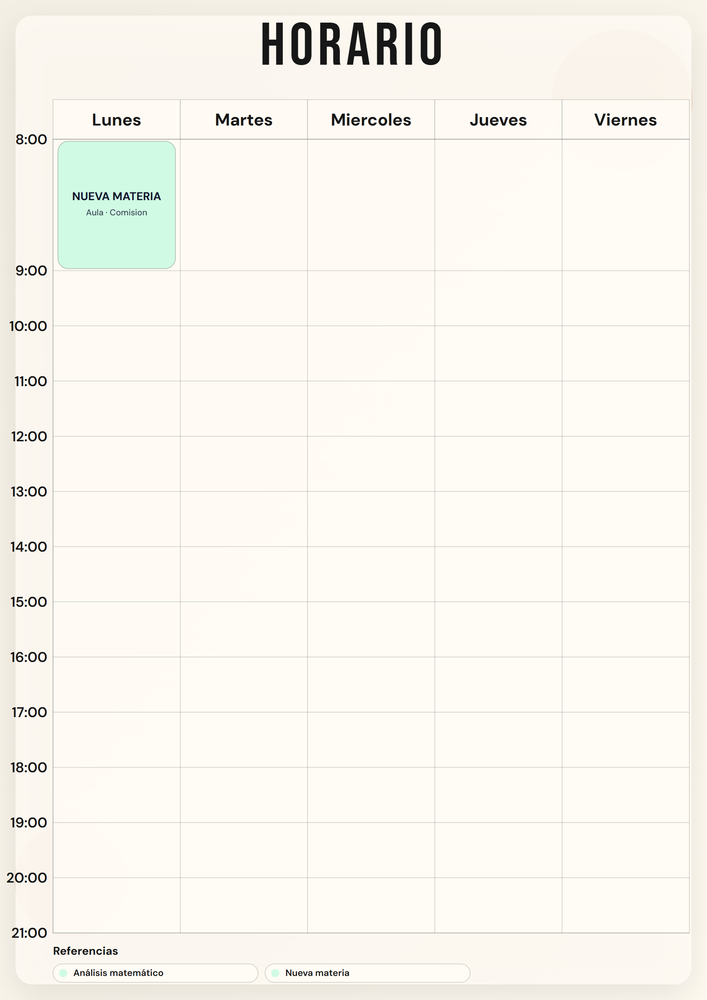
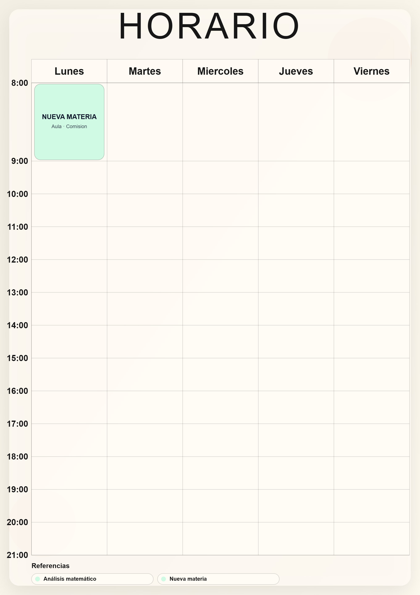

Enlace inválido, horario borrado
Con dos bloques guardados, abrir ?s=invalid deja cero y anuncia una carga exitosa.
Reconstruir el estudio alrededor de materias compartidas, edición directa y una composición única para pantalla, SVG y PNG.
Auditoría del código y flujos reales · 13 de octubre de 2026. Propuesta documentada, todavía sin cambios en la aplicación.
Con dos bloques guardados, abrir ?s=invalid deja cero y anuncia una carga exitosa.
Un tema inexistente en JSON o una falla de cuota hace caer la interfaz, sin recuperación visible.
Los solapamientos usan el mismo rectángulo. Los bloques fuera del rango aparecen pegados al borde.
Nombre y color viven en cada bloque. El lienzo no selecciona clases y Ctrl+Z no recupera el documento.


Build y lint pasan. Las pruebas de uso detectaron estos errores en Chromium aislado; otros navegadores, lectores y teléfono físico quedan para validar la reconstrucción.
Nombre y colores pertenecen a la materia. Aula, tipo y notas pertenecen a cada bloque. El mismo nombre o color deja de copiarse manualmente.
Boceto estático de jerarquía e interacción. No es una pantalla implementada ni fija el tema gráfico definitivo.
Nuevo proyecto y ajustes en modales. Temas personales guardados como presets; cada proyecto conserva su propia copia.
Ghost, selección, mover, handles, borrar, copiar/pegar y deshacer. Cada gesto confirmado crea una operación de historial.
Entradas inválidas no pisan el archivo. Comparar contornos y embedding antes de elegir dependencia.
Materia compartida, bloques independientes, migración revisable y varios proyectos locales.
Empty state, crear proyecto, menús, biblioteca e inspector. Formularios accesibles y uso móvil.
Texto medido, carriles, geometría válida y SVG offline. Vista y PNG usan la misma composición.
Ghost, mover y resize con snap. Cancelar no cambia el archivo; un drag equivale a un undo.
Presets, Google Fonts, UIArc integrado en flujos reales; probar navegadores, lectores y teléfono.
Solapes permitidos con carriles. No ocultar clases al reducir el rango. Importar como proyecto nuevo. Migrar sin fusionar colores distintos. Temas independientes entre proyectos. Edición inicial uniforme.
Revisión completa de 110 componentes y 22 bloques gratuitos del catálogo oficial. Cada pieza tiene destino y motivo en la matriz de documentación.
38 decisiones no equivalen a 38 instalaciones nuevas. Las bases locales que ya sirven se conservan. El time picker necesita corregir o verificar opción activa y foco accesible; todas las piezas se traducen y respetan movimiento reducido.